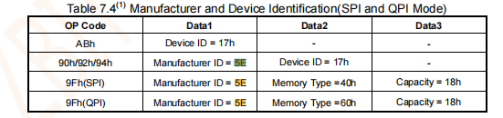
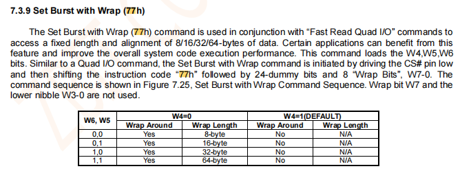

适配说明
本节介绍 Luban-Lite 方案中 XIP（Execute In Place）启动的适配说明。
不同的处理器和平台可能有不同的实现细节和要求。因此，在进行 XIP 适配时，务必参考特定处理器的技术文档和相关资源。
可执行文件
-
bsp/artinchip/drv_bare/spinor/aic_flash_xip_def.c：关于 NOR Flash 的 XIP 配置信息
-
bsp/artinchip/include/drv_bare/aic_flash_xip_def.h：关于 aic_flash_xip_def 相关结构体和接口声明
-
bsp/artinchip/include/hal/hal_qspi.h：关于 QSPI 控制器相关接口头文件
配置结构体定义
XIP 相关的 NOR Flash 信息配置 bsp/artinchip/drv_bare/spinor/aic_flash_xip_def.c 文件中。
以下是 SPI NOR Flash 设备的配置结构体定义，主要包括以下几个部分：
-
xip_device结构体：包含设备名称、Flash ID、支持的协议等信息，以及两个配置结构体（qspi_xip_burst_cfg和qspi_xip_read_cfg）。struct xip_device { const char *name; u32 flash_id; u32 proto_support; struct qspi_xip_burst_cfg burst_cfg; struct qspi_xip_read_cfg read_cfg; }; qspi_xip_burst_cfg结构体：用于配置 QSPI XIP 模式下的突发传输参数，包括设置突发命令、虚拟字节、位宽等。struct qspi_xip_burst_cfg { u8 cmd_set_burst; /* CMD to set burst with wrap or linear, 77h or C0h */ u8 cmd_dummy_byte; /* Dummy byte fot set burst command */ u8 cmd_bits_width; /* When CMD is C0h, bits width is needed to set */ u8 wrap_en; /* 00: disable, 01 wrap with fixed len, 02 wrap with auto len */ struct qspi_xip_wrap_bits wrap; };qspi_xip_wrap_bits结构体：用于配置 QSPI XIP 模式下的包装位参数，包括固定长度、禁用包装、自动选择不同长度的包装位。struct qspi_xip_wrap_bits { /* * When config SPI controller select to use fixed wrap length, should * set the selected wrap bits value to it. */ u8 fixed_len; /* * Wrap bits value to disable wrap length */ u8 disable; /* * Wrap bits value to select wrap length 64bytes */ u8 auto_wl64; /* * Wrap bits value to select wrap length 32bytes */ u8 auto_wl32; /* * Wrap bits value to select wrap length 16bytes */ u8 auto_wl16; /* * Wrap bits value to select wrap length 8bytes */ u8 auto_wl8; };qspi_xip_read_cfg结构体：用于配置 QSPI XIP 模式下的读取参数，包括读取命令、虚拟字节、地址模式等。struct qspi_xip_read_cfg { /* * QIO or QPI read command value */ u8 read_cmd; /* * Read command's dummy byte. * User should check SPI NOR datasheet and set it. */ u8 dummy_byte; u8 addr_mode; /* 0: 3byte address, 1: 4byte address */ /* * When CPU cache is disabled, user can select to enable read command bypass mode */ u8 read_cmd_bypass_en; struct qspi_xip_read_cmd_mode_byte mode; };qspi_xip_read_cmd_mode_byte结构体：用于配置 QSPI XIP 模式下的读取命令模式字节，包括正常模式和绕过模式。struct qspi_xip_read_cmd_mode_byte { /* * Mode byte code value to set read command bypass mode, * User should check SPI NOR datasheet and set it. */ u8 bypass; /* * Mode byte code value to set read command normal mode, * User should check SPI NOR datasheet and set it. */ u8 normal; };
适配方法
在 bsp/artinchip/drv_bare/spinor/aic_flash_xip_def.c 文件中添加节点信息到
struct xip_device 结构体中。每个节点代表一颗 NOR Flash 。
{
.name = "ZB25VQ128", // verify ok.
.flash_id = 0X5E4018,
.proto_support = CMD_PROTO_QIO|CMD_PROTO_CACHE_EN|CMD_PROTO_CACHE_DIS,
.burst_cfg = {
.cmd_set_burst = 0x77,
.cmd_dummy_byte = 3,
.cmd_bits_width = XIP_C0_BITS_WIDTH_4,
.wrap_en = XIP_BURST_WRAPPED_WITH_FIXED_LEN,
.wrap = {
.fixed_len = 0x40,
.disable = 0x10,
.auto_wl64 = 0x60,
.auto_wl32 = 0x40,
.auto_wl16 = 0x20,
.auto_wl8 = 0x00,
},
},
.read_cfg = {
.read_cmd = 0xEB,
.dummy_byte = 2,
.addr_mode = SPINOR_ADDR_MODE_3BYTE,
.read_cmd_bypass_en = 0,
.mode = {
.bypass = 0xf0,
.normal = 0x00,
},
},
}, //.name = "ZB25VQ128",-
.flash_id= 0X5E4018：一般情况下，可通过 SPI 模式读取设备 ID，根据手册说明，ZB25VQ128 ID 为 0x5E4018。
图 1. Flash ID -
.burst_cfg：
struct qspi_xip_burst_cfg需要填充 Set Burst with Wrap 指令配置，根据手册可知，.cmd_set_burst = 0x77，.wrap_en = XIP_BURST_WRAPPED_WITH_FIXED_LEN使能即使用struct qspi_xip_wrap_bits的.fixed_len配置其中.fixed_len = 0x40意为 bit6 = 1， bit5=0 , 即 0x40.注意.cmd_dummy_byte是以 Byte 为单位，手册中描述需要 24 Dummy Bits，即 3 Bytes。图 2. Burst CFG -
.read_cfg =：
structqspi_xip_read_cfg是填充 Fast Read Quad I/O 指令配置，从 Set Burst with Wrap 指令的描述可知， The Set Burst with Wrap (77h) command is used in conjunction with ― Fast Read Quad I/O commands to access a fixed length and alignment of 8/16/32/64-bytes of data.
注意事项
-
Cache 关闭，QIO/QPI 模式
-
要点QIO:
-
CPU 只发 Linear 访问
-
Read Command Bypass 可以使能
-
SPINOR 需要使能 QE Bit
QPI:-
CPU 只发 Linear 访问
-
Read Command Bypass 可以使能
-
SPINOR 需要使能 QE Bit
-
SPINOR 需要进入 QPI 模式
-
-
为什么 Cache Enable 时，必须使能 Wrap
CPU Cache 使能时，CPU 发起的访问可能是 Wrap burst，如果 SPI 控制器的 Wrap enable 没有使能， 则 SPI 控制器的 XIP 模块不会发送设置 SPINOR Wrap 模式的命令。 结果会导致 CPU 的访问类型与 SPINOR 返回数据的方式不匹配，读取数据出错。
-
-
Cache 使能，QIO/QPI 模式
-
要点QIO:
-
SPI 控制器的 Wrap burst 必须使能
-
Read Command Bypass 不可以使能
-
CPU 可能发 Linear/Wrap burst 访问
-
SPINOR 需要使能 QE Bit
QPI:-
SPI 控制器的 Wrap burst 必须使能
-
Read Command Bypass 不可以使能
-
CPU 可能发 Linear/Wrap burst 访问
-
SPINOR 需要使能 QE Bit
-
SPINOR 需要进入 QPI 模式
-
-
为什么 Cache Enable 时，不可以使能 Read Command Bypass
CPU Cache 使能时，CPU 发起的访问可能是 Linear 访问，也可能是 Wrap burst 访问，SPI XIP 控制器需要根据接收到的 CPU 访问类型，发送命令对 SPINOR 进行切换。
Cache 使能时，同时使能 Read Command Bypass 会导致上述的切换失败。
具体场景如下：
-
CPU 进行 Linear 访问时，设置了 Read Command Bypass
-
CPU 切换到了 Wrap burst 访问
-
此时 SPI XIP 模块需要发送切换命令到 SPINOR
-
问题：SPINOR 还在 Read Command ByPass 模式下，需要退出该模式才能接收命令，因此切换命令发送会失败
-
CPU Wrap burst 访问也会跟着失败
-
-